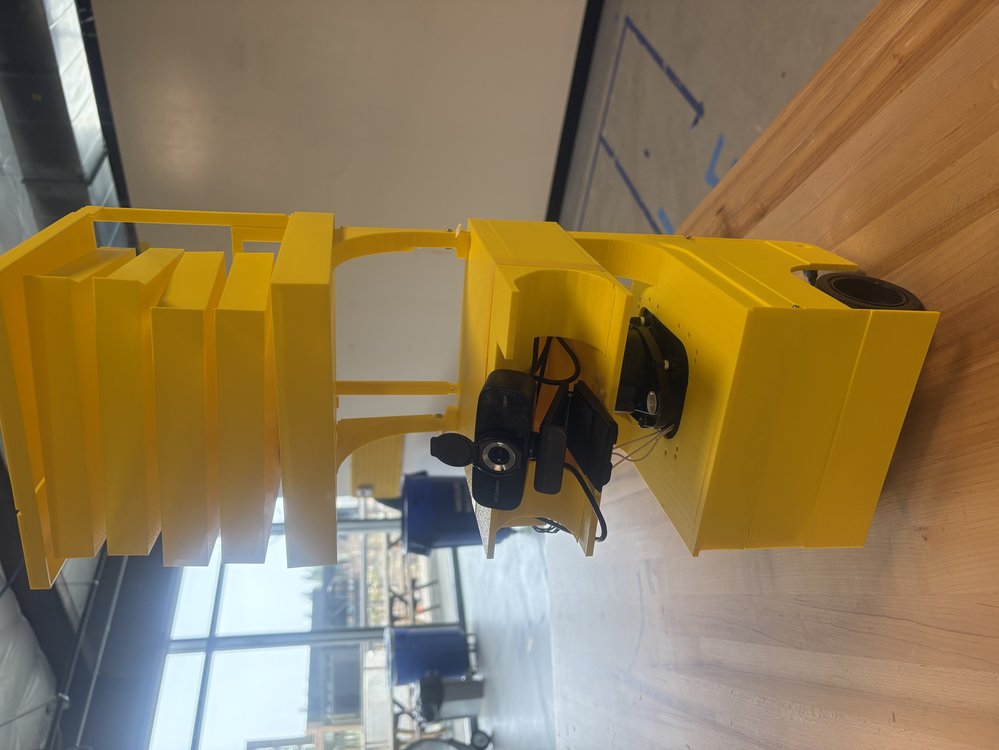

BuddyBot — Intelligent Delivery Robot
ROS2-based human-following robot on Turtlebot3 using YOLO + MediaPipe for real-time tracking and gesture-driven FSM control. Features visual servoing, auto-recovery, and an adaptive lifting platform.